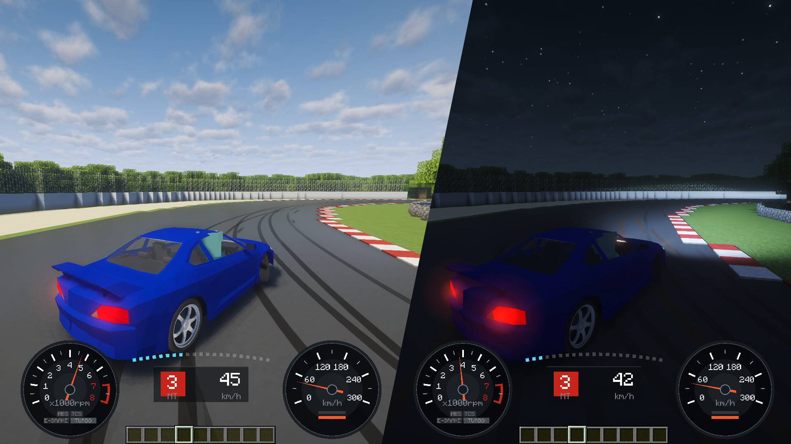

Built to look great and stay smooth with shader packs.シェーダーパックで走るために作りました。
KurumaMod is built so you can keep your shader pack on, even on a full grid.KurumaMod は、車がたくさん並ぶレースでもシェーダーを切らずに走れるように作っています。
Optimised rendering keeps things comfortable even with a lot of cars on screen. Go racing with friends and keep your pack on.最適化処理により、車がたくさん並んでも快適に走れるようになりました。友達とのレースでも、シェーダーを入れたまま楽しめます。
The body and tyres cast clean shadows on the road, following the sun and moon.車体とタイヤの影が、太陽や月の向きに合わせて路面にきれいに落ちます。
Headlights, tyre smoke and skid marks sit naturally in the pack's light and colour.ヘッドライト、タイヤの煙、タイヤ痕が、パックの光や色合いに自然に馴染みます。
Only what we ran ourselves is listed. Other versions and packs may work, but we have not checked them.手元で動かしたものだけを載せています。ほかの版やパックでも動くかもしれませんが、確かめていません。
| Minecraft / loaderMinecraft / ローダー | Shader modシェーダー MOD | With一緒に入れた MOD | Packs tried試したパック |
|---|---|---|---|
| 1.20.1 Forge | Oculus 1.8.0 | Embeddium 0.3.31 | Complementary Unbound r5.9.2 |
| 1.21.1 NeoForge | Iris 1.8.12 | Sodium 0.6.13 | Complementary Unbound r5.9.3 |
| 1.21.1 Fabric | Iris 1.8.8 | Sodium 0.6.13 | Complementary Unbound r5.9.3 |
| 26.3 Fabric | Iris 1.11.7 | Sodium 0.9.2 | Complementary Unbound r5.9.3 |
| 26.3 NeoForge | Shaders cannot be used yet because Iris and Sodium do not support this version.今は Iris / Sodium が対応していないため、シェーダーを使用できません。 | ||
| 26.3 Forge | Shaders cannot be used yet because Iris and Sodium do not support this version.今は Iris / Sodium が対応していないため、シェーダーを使用できません。 | ||
OptiFine has not been tested.OptiFine は確かめていません。
| Feature機能 | Without a packシェーダーなし | With a packシェーダーあり |
|---|---|---|
| Car shadow車の影 | Soft shadow under the car車の下の丸い影 | Real shadows from the sun and moon太陽と月の光で落ちる影 |
| Headlightsヘッドライト | Yes対応 | Yes対応 |
| Tyre smokeタイヤの煙 | Yes対応 | Yes対応 |
| Skid marksタイヤ痕 | Yes対応 | Yes対応 |
| Mirrorsミラー | Live reflection景色が映る | Not supported非対応 |
| Lighter car rendering車の軽量描画 | Yes対応 | Yes (Oculus and Iris compatible)対応（Oculus互換・Iris互換） |
If a pack blends the headlights badly, adjust them with Ctrl+L. On Minecraft 26.3, use the OpenGL graphics backend with shader packs.パックによってヘッドライトの合成が崩れるときは、Ctrl＋L で調整してください。Minecraft 26.3 でシェーダーパックを使うときは、描画を OpenGL にしてください。